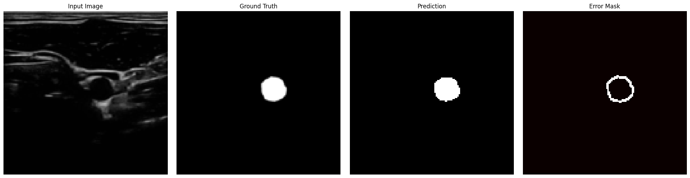

About Me
Biomedical Engineering MASc student specializing in AI-driven medical imaging and diagnostics, passionate about advancing patient care through technology.
Education
- MASc in Biomedical Engineering – University of Guelph (2024–2026)
- BASc in Biomedical Engineering – Toronto Metropolitan University (2019–2024)
Experience
- Graduate Researcher – Guelph Imaging AI Lab (2024–Present)
- Research Intern – Vector Institute (2024–Present)
- Machine Learning Intern – HealthTech Startup (2023)
Projects
FusionViTNet



Developed a hybrid CNN and Vision Transformer model for accurate carotid artery segmentation in ultrasound images.
GitHub RepoLung Nodule Segmentation

Deep learning-based automatic lung nodule detection system to aid radiologists in early diagnosis.
GitHub RepoDiabetic Foot Ulcer Monitoring

Designed and developed a thermal and pressure sensing sock to monitor diabetic foot ulcers, connected to a mobile app.
GitHub RepoExtracurriculars

Active member in professional engineering communities and student leadership roles.
Contact
- Email: zinahghulam@gmail.com
- LinkedIn: zinah-ghulam